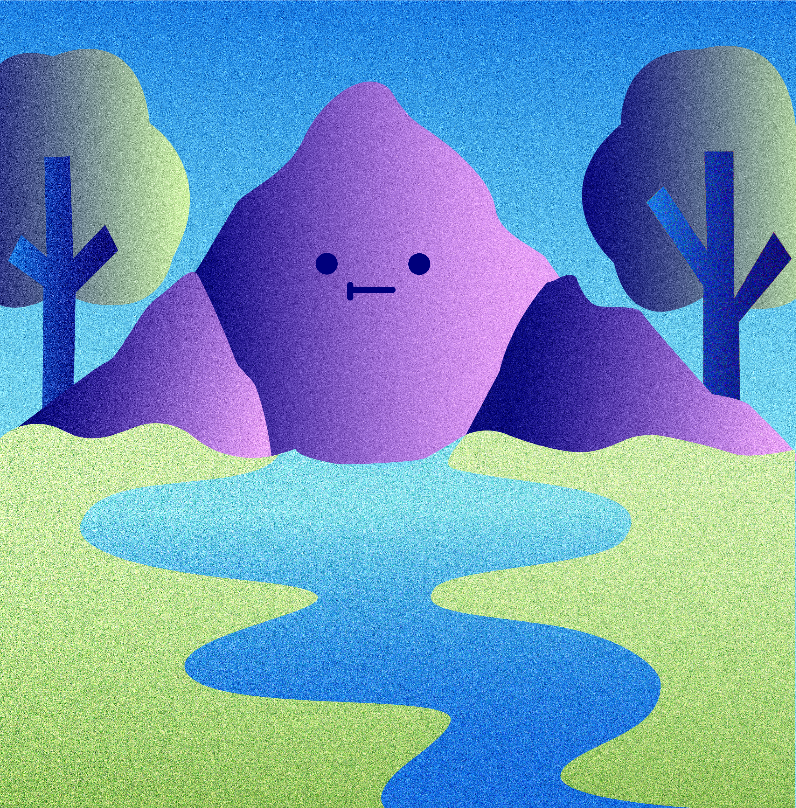

¿Qué es la Crisis Hídrica?
*Se define como una disminución significativa en la calidad y cantidad de agua dulce disponible, lo que deriva en efectos perjudiciales para la salud humana y/o la actividad económica.
Los desafíos hídricos a nivel mundial no se limitan únicamente a la escasez y la contaminación sino que pueden derivar de diversas situaciones, como:
Debido a las precipitaciones extremas que generan inundaciones u otras consecuencias catastróficas.
Estos riesgos medioambientales contribuyen directamente a riesgos sociales, tales como crisis alimentarias, desastres ambientales y migraciones forzosas a gran escala. Generando inestabilidad, lo que deriva en conflictos de Estados y una creciente polarización de las sociedades que precipitan la violencia, lo que nos lleva a un posible riesgo global, “Las armas de destrucción masiva”
Crisis Ambiental

Fuentes:
* (2018). Pacific Institute. Reimagining Water for a Changing World. “Defining Water Scarcity, Water Stress, and Water Risk”
(2018). Pacific Institute. Reimagining Water for a Changing World. “Water is Connected to Every Major Global Risk We Face”